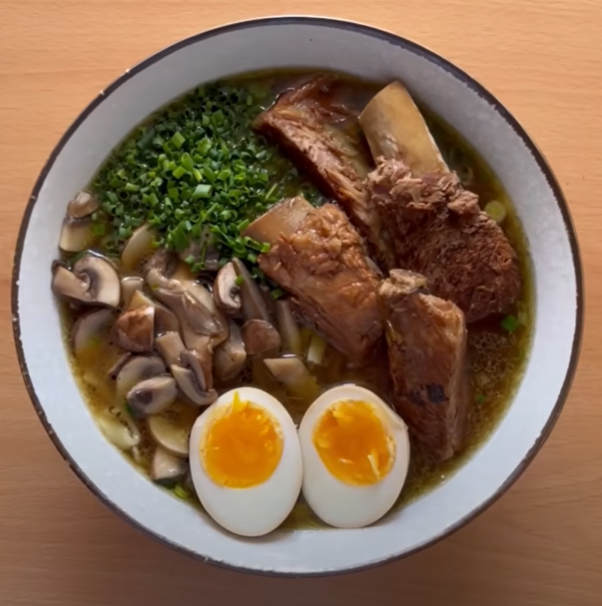

Ramen¶

Datos básicos¶
- Comensales: 4
- Tiempo total de preparación: 3 horas
Ingredientes¶
- 1 Kg de costillas de cerdo
- 2 cebollas
- 1 cabeza de ajos
- 2 zanahorias
- 6 ajos tiernos
- 240 ml de salsa de soja
- Jengibre
- Champiñones/Setas
- Cebollino
- 4 huevos
- Azúcar
- Sal
- 2,5 litros de agua
Preparación¶
- Hervir las costillas 5 minutos a fuego fuerte. Enjuagarlas en agua fría después y reservar.
- Preparamos la base del caldo: las 2 cebollas cortadas en cuartos, las dos zanahorias, 3 ajos tiernos, 8 dientes de ajo y 50g de jengibre en láminas. En una olla echamos una buena cantidad de aceite y doramos las verduras. Cuando estén doradas añadimos las costillas, 2 litros y medio de agua y 120 ml de salsa de soja. Hervir 2 horas con tapa puesta a fuego medio, y remover de vez en cuando.
- Preparamos los huevos: ponemos agua a hervir, y cuando hierva echamos los 4 huevos durante 6 minutos y medio. Luego los ponemos a remojo con agua con hielo, o los remojamos varias veces en agua fría. Los pelamos cuando estén fríos, y los dejamos a remojo con agua, salsa de soja (100-120ml) y un poco de azúcar, hasta que todo lo demás esté listo.
- Preparamos ahora los toppings:
- 3 ajos tiernos troceados, 3 dientes de ajo rallados y un poco de jengibre pelado y rallado. Lo ponemos en un cuenco pequeño y le echamos por encima unos 60ml de aceite de oliva muy, muy caliente. Reservamos
- Salteamos unos cuantos champiñones/setas al gusto y reservamos
- Troceamos fino un poco de cebollino
- Cuando el caldo esté listo, sacamos las costillas y las ponemos en una sartén junto con el líquido del marinado de los huevos y una cucharada sopera de azúcar para compensar el sabor y caramelizar la salsa. Cuando la salsa se haya reducido bastante, ya están listas las costillas. Reservamos
- Cocemos la pasta de ramen (mirar tiempo según la pasta). Al finalizar, pasar la pasta por agua fría para parar la cocción
- Emplatamos:
- Abajo ponemos el topping de ajos tiernos
- Luego unos 2-3 cazos de caldo
- Luego la pasta cocida (removemos con el caldo para mezclar y que se vuelva a calentar la pasta con el caldo)
- Ponemos los toppings de setas/champis en un cuarto de la parte superior
- El cebollino en otro cuarto
- 3-4 costillas en otro cuarto
- Un huevo partido por la mitad en otro cuarto